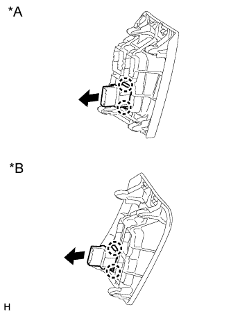

ВЫКЛЮЧАТЕЛЬ VSC OFF > УСТАНОВКА |
| 1. УСТАНОВИТЕ ВЫКЛЮЧАТЕЛЬ VSC OFF |
|  |
Введите в зацепление 2 захвата и установите выключатель VSC OFF на нижнюю отделочную накладку панели приборов.
| *A | Для моделей с левосторонним рулевым управлением |
| *B | Для моделей с правосторонним рулевым управлением |
Подсоедините разъем выключателя VSC OFF.
| 2. УСТАНОВИТЕ НИЖНЮЮ ОТДЕЛОЧНУЮ НАКЛАДКУ ПАНЕЛИ ПРИБОРОВ |
Подсоедините все разъемы.
Установите отделочную накладку панели приборов и закрепите ее 4 фиксаторами.